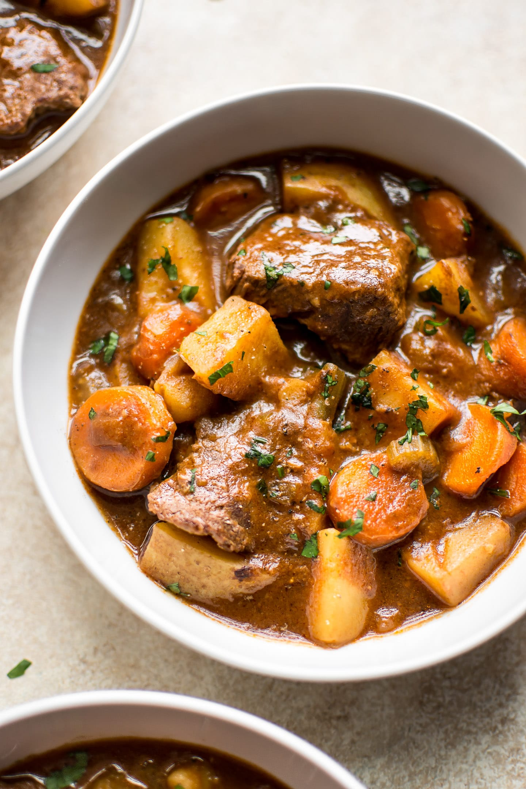

Beef Stew

This beef stew is the ultimate, hearty, melt-in-your mouth comfort food of all,
and so easy to make in the Instant Pot® for a simple midweek dinner
- 1 tablespoon butter
- 1 pound beef chuck, cut into 1-inch cubes
- 4 Yukon gold potatoes, cubed
- 1 1/2 cup mushrooms. halved
- 1 onion, cut into 6 wedges
- 2 carrots, cut into 1/2 inch thick slices
- 2 cloves garlic, minced
- 3 cups beef broth
- 1 tablespoon worcestershire sauce
- 1 tablespoon tomato paste
- 1 teaspoon salt
- 1/2 teaspoon ground black pepper
- 1/2 teaspoon dried rosemary